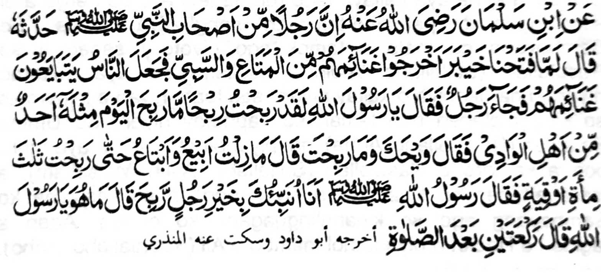

Miyaka thitayan ko Abu Salman a aden a mama a ped ko manga Sahabah o Nabi (Sallallaho 'Alaihi Wasallam) a piyanothol iyanon sa pitharo iyan, "Si-i ko kiyapaka taban tano sa Khaibar na omani isa na iniliyo niyan so miyathaban niyan a ped ko manga tamok ago biyag, na miphapasa-i kami ko miyataban nami. So isa rekami na somiyong ko Rasulollah (Sallallaho 'Alaihi Wasallam) na pitharo iyan, "Ya Rasulollah (Sallallaho 'Alaihi Wasallam), dapen a lagid aken a miyakalaha sa kiyandagang imanto a gawi-i." Pitharo o Rasulollah (Sallallaho 'Alaihi Wasallam), "Pira-i miyalabang ka?" Pitharo iyan, "Miyamamasa ko ago miphasa ko taman sa miyakalaba ko sa telo gatos ka Oqiyyah a pirak." Pitharo o Rasulollah (Sallallaho 'Alaihi Wasallam), Bako reka petharo-a so lebi a mapiya a di giyanan?" Patharo iyan, "Tharo angka raken, ya Rasulollah (Sallallaho 'Alaihi Wasallam)'" Pitharo o Rasulollah (Sallallaho 'Alaihi Wasallam), "Dowa Rak'at a Sunnat ko oriyano (Paraloa) Sambayang'
So telo gatos a Oqiyyah1 a pirak na mararani telo nggibo a Rupee. Siyabot ko katharo o Nabi (Sallallaho 'Alaihi Wasallam), na so khada bo a laba si-i sa donya na da-a timbang iyan ko tatap a kalaba sa Alongan a Maori. So kapagintao tano na phakapiya ago khatago-an sa bali amay ka mapadalem ko paratiyaya tano sa apiya so dowa rak'at a Sambayang na aya kailaya tano ron na lebi a mala-i arga a di so langon o pathamo-tamokan sangka-iya donya. So Sambayang na mala a tamok ago giyoto i sabap a so Rasulollah (Sallallaho 'Alaihi Wasallam) na aya inibetho niyanon na "Ikapiya o kailay niyan" ago tanto niyan a inipami-is so kinggolalanen non taman ko kaphatay niyan. So Umme Salamah (Radhiallaho 'Anha) na piyanothol iyan a aya mori-pori a katharo o Rasulollah (Sallallaho 'Alaihi Wasallam), a maregen pen so kiyatharo a niyan non na so kasiyapa ko Sambayang ago so kipanalinggagaon ko oripen Aden a lagida-i a Hadith a piyanothol mambo o Ali (Radhiallaho 'Anho).
1So isa a Oqiyyah na aya timbang iyan na sapolo (10) a andang a pirak a Rupee (kena ba so Rupee imanto a pirak sa India) Omani isa (1) a andang a Rupee na aya timbang iyan na 12 gramos a pirak. Aya ma-ana niyan na so isa a Oqiyyah na aya timbang iyan na 120 ka gramos a pirak. So telo gatos (300) a Oqiyyah na aya timbang iyan na 36,000 ka gramos a pirak o di na 36 ka kilo a pirak. O aya kapapantagan imanto a arga o isa ka giamo a pirak ko pirak tano sa Pilipinas a Peso na P20.00, na aya kala a arga o telo gatos (300) a Oqiyyah na P720.000 00
So Rasulollah (Sallallaho ’Alaihi Wasallam) na miyaka isa na siyogo iyan sa Jihad si-i sa Najd so isa a Jama-at Miyaka kasoy siran sa miyakataban siran ago maawid siran sa mala a tiyaban niran. Kagiya mailay o Rasulollah (Sallallaho 'Alaihi Wasallam) so manga tao a ipekhasigi ran angkoto a jama'at ago miyamemesa siran sangkoto a kaga-an ago miyagontong a kiyapaka kasoyran, na pitharo iyan kiran, "Ba ko rekano petharo-a so siran a sgorompong a manga tao a lebi a mala a bagi-an niran si-i ko lebi a maga-an a masa? Siran so manga tao a miyaka zambayang sa Paralo ko Sobo a barajoma na onyan niyan na miyontod sa da mathay taman sa somibang so alongan na oriyan niyan na mizambayang sa dowa rak'at a sunnat a Sambayang Pitharo o Shaqiq Balkhi, a kababantogan a Shaikh. "Lima a nganin a khakowa ko lima a manga okit: So kapakala o Rizqi mokit ko Chaasht (Sambayang a Sunnat a Dhoha), so sindao ko Qobor mokit ko Sambayang a Tahajjud, so kapiya a sembag ko Munkar ago Nakir mokit ko kabatiya sa Qur'an, so kalebod a kapakatitay sa Sirat mokit ko kaphowasa ago kazadqa, ago so darpa a ped ko kalalambongan n Arsh o Allah ko Gawi-i a Kaphangokom mokit ko kazibasibay (ma-ana Zikr)."